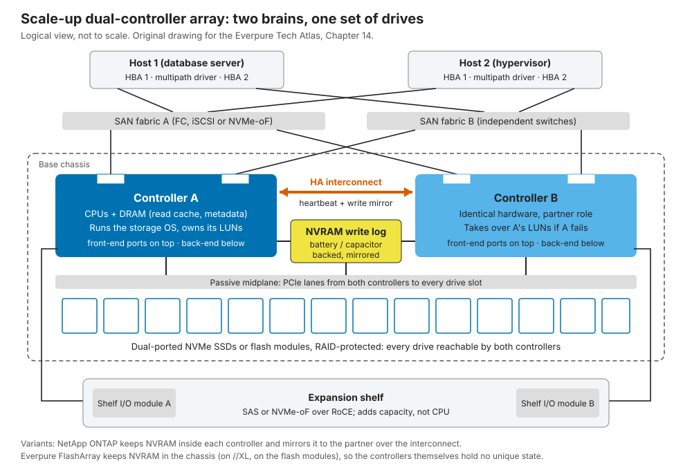

14. Scale-up dual-controller arrays¶
Depth: L2 · Reading time: ~9 min · Last verified: 2026-11-01 Prerequisites: The storage stack · Inside an SSD · Data protection and resilience · Block protocols
TL;DR¶
- A dual-controller array is two servers sharing one set of dual-ported drives. If one dies, the other takes over. FlashArray, PowerStore, NetApp AFF, IBM FlashSystem and HPE Alletra all work this way.
- A write is acknowledged once it sits in two persistent places, not on flash. It lands in mirrored or shared NVRAM; flash is written later in batches.
- "Active/active" is a spectrum; ALUA tells hosts where an array sits. The real question is how much performance remains with one controller gone.
- A non-disruptive upgrade is two planned failovers. Everpure's stateless controllers turned that into a commercial product: Evergreen.
- The wall is one pair's CPU and memory. Beyond it, vendors federate pairs, which is not the same as one bigger system.
Why this matters for Everpure strategy¶
FlashArray, Everpure's founding product, is a dual-controller design, and so are its main block rivals. Enterprise block deals are fought on p99 latency, behaviour during failure, upgrade disruption and refresh economics. Evergreen//Forever's promise of new controllers at each three-year renewal1 works only because the controller holds no data: the business model is an architectural property.
The tension is that AI and large file workloads pull spending toward designs with no central pair (Chapter 15, Chapter 16). Knowing where scale-up still wins is how to judge FlashArray's runway and FlashBlade's role (Chapter 27).
Core concepts¶
The idea in one picture¶
Each controller is a server with x86 CPUs, DRAM, front-end ports (FC, iSCSI or NVMe-oF) and back-end links to the drives. Hosts cable into two independent fabrics, so any single component can fail without losing access. Only the passive midplane and the software are not doubled.

Figure 14.1 — Two controllers, one set of drives: every path, controller and drive connection is redundant, but the software and chassis are shared.
Semiconductor bridge: hot standby, not lockstep. ASIL-D automotive SoCs run two cores in lockstep and a comparator flags divergence. A controller pair compares nothing; the partner holds just enough state (the mirrored write log) to resume. Lockstep buys fault detection, HA buys availability; both share one weakness: a bug hits both copies.
Where state lives¶
Data and metadata sit on RAID-protected drives (Chapter 6), in-flight writes in small, durable NVRAM, and rebuildable caches in controller DRAM. The key choice is where NVRAM sits.
- Inside each controller, mirrored to the partner. ONTAP logs each write in local NVRAM and mirrors it to the HA partner, which replays it on takeover2. If the mirror falls out of sync, ONTAP blocks takeover3. The entry PowerStore 500 mirrors into its peer's DRAM4.
- In the chassis, reachable by both. FlashArray//m dual-homed its NVRAM modules to both controllers over PCIe5. FlashArray//XL moved it onto DirectFlash modules ("DFMD"), so log capacity and bandwidth grow with module count6. Larger PowerStore models keep mirrored pairs of NVRAM drives in the base enclosure4. With nothing unique in the controller, Pure Storage called the design "stateless": a controller can be swapped without destaging anything5.
Semiconductor bridge. NVRAM is array-scale power-loss protection: DRAM or SRAM held up by capacitors or batteries long enough to dump to flash, as in an SSD (Chapter 3).
Tracing a write ★¶
sequenceDiagram
participant H as Host
participant A as Owning controller A
participant N as NVRAM log
participant B as Partner controller B
participant F as Flash drives
H->>A: WRITE 32 KB to LUN 7
A->>A: validate, checksum, place in DRAM
A->>N: append to NVRAM write log
A->>B: mirror log entry over HA interconnect
B-->>A: mirror persisted
A-->>H: ACK
Note over A,F: Later, off the latency path
A->>A: dedupe, compress, fill a RAID stripe
A->>F: write full stripe to flash
A->>N: release log spaceFigure 14.2 — The ACK waits for two persistent copies of the write log, never for flash. With chassis NVRAM, as on FlashArray, the mirror step becomes a write into NVRAM that both controllers can read.
Worked example (illustrative). Wire and protocol ~20 µs, NVRAM append ~10 µs, mirror hop ~15 µs, software ~50 µs: the ACK leaves in roughly 100 µs. One TLC page program takes hundreds of microseconds, so waiting for NAND would multiply write latency. NVRAM is a buffer, not a cache. At 4 GB/s of sustained writes a 32 GB log holds 32 ÷ 4 = 8 seconds; if the flush falls behind, the log fills and hosts are throttled to flash speed, a latency cliff. Those 4 GB/s also cross the mirror path, which is why interconnects are PCIe or 100 Gb-class RDMA.
Tracing a read¶
sequenceDiagram
participant H as Host
participant A as Owning controller A
participant D as DRAM cache in A
participant F as Flash drives
H->>A: READ 64 KB from LUN 7
A->>D: look up block map and cache
alt cache hit
D-->>A: data
else cache miss
A->>F: read needed blocks through the midplane
F-->>A: compressed blocks
A->>A: verify checksum and decompress
end
A-->>H: data
Note over H,A: A read arriving at controller B is forwarded over the interconnect, adding one hopFigure 14.3 — Reads skip NVRAM unless the data is still in the log. Arriving at the "wrong" controller costs one interconnect hop, and ALUA path states advertise exactly that.
Most flash-array reads miss DRAM: latency is a metadata lookup, a NAND read and decompression, and at high IOPS controller CPU is the limit.
Active/active, active/passive and ALUA¶
| Model | How it works | Examples |
|---|---|---|
| Active/passive | One controller serves everything; the other waits | Older midrange arrays |
| Asymmetric active/active | Each controller owns some LUNs; I/O sent to the non-owner is forwarded | NetApp AFF before 9.19.1; IBM FlashSystem preferred node; Dell PowerStore, whose two nodes both serve I/O7 [VERIFY: PowerStore per-volume node affinity and ALUA path states] |
| Symmetric active/active | Every path optimized; any controller serves any LUN via a coherent shared cache | NetApp ASA8 and AFF from 9.19.19; HPE Alletra 9000 "all-active"10; PowerMax global cache11 |
| Single-envelope (FlashArray) | All ports active, but only the primary controller processes I/O; the secondary relays its ports' I/O and keeps a DRAM mirror of transactions1213 | FlashArray; since January 2026, XL190 Purity Turbo lets the secondary serve reads14 |
Table 14.1 — "Active/active" covers three different designs; FlashArray is its own category.
FlashArray is the outlier, and current Everpure material still describes it this way: active/active for host connectivity, with workload processing on one controller12. Pure's own taxonomy calls Purity//FA a "single-writer" design, against the "partitioned-writer" Purity//FB in FlashBlade15. Critics called it active/passive in disguise16; Pure Storage's answer is that capping performance at one controller's worth means nothing is lost on failure17.
How ALUA works. Asymmetric Logical Unit Access is a SCSI standard (SPC-3). Each port group reports a per-LUN state: active/optimized, active/non-optimized, standby or unavailable. Hosts use optimized paths and fall back only when needed; on failover the array flips states. NVMe's equivalent is ANA18, which ONTAP has supported since 9.519. Symmetric designs mark every path optimized, so hosts never wait for a transition8.
flowchart LR
H["Host multipath driver"]
PA1["Controller A port 1"]
PA2["Controller A port 2"]
PB1["Controller B port 1"]
PB2["Controller B port 2"]
CA["Controller A owns LUN 7"]
CB["Controller B"]
L[("LUN 7 on shared drives")]
H -->|"optimized, fabric A"| PA1
H -->|"optimized, fabric B"| PA2
H -.->|"non-optimized, fabric A"| PB1
H -.->|"non-optimized, fabric B"| PB2
PA1 --> CA
PA2 --> CA
PB1 --> CB
PB2 --> CB
CB -->|"forward over interconnect"| CA
CA --> LFigure 14.4 — The host spreads I/O across optimized paths and keeps non-optimized paths in reserve. If controller A dies, the array marks B's paths optimized and B takes ownership.
Semiconductor bridge. ALUA is NUMA advertised to the host: a non-optimized path is a remote-socket access over UPI, and the port-group report plays the role of the SRAT/SLIT distance tables.
Worked example (the headroom trap). Two controllers each deliver 500k IOPS, so a vendor can market 1M. Run at 800k and lose one: the survivor faces 800k against 500k of capacity, and latency hockey-sticks (Chapter 4). Riding through undegraded requires ≤500k total, or 50% per controller. Failure-safe performance of any two-controller array is one controller's capacity. Active/active lets customers run hotter and accept degradation; FlashArray makes that choice for them.
Failure handling¶
| Failure | What happens | Blast radius / cost |
|---|---|---|
| Drive | RAID or erasure-coded rebuild onto spare capacity; both controllers can read every drive | Small. Rebuild CPU competes with host I/O |
| Controller | Partner takes ownership and replays the mirrored log. ONTAP I/O pause is "generally measured in seconds"2; Everpure cites a short pause during local HA failover20 | Hosts must tolerate the pause. With active/active run hot, performance drops |
| NVRAM module or mirror link | Redundant module or mirror continues. ONTAP refuses takeover while the log is unsynchronized3 | Window of reduced protection |
| Path (HBA, cable, switch, port) | Multipath driver retries on surviving paths. ONTAP SAN LIFs do not move, so hosts must switch paths2 | None if hosts are dual-fabric and timeouts are set correctly |
| Expansion shelf or shelf module | Second shelf I/O module keeps the drives reachable. Losing a whole shelf depends on how RAID groups span shelves | Large: one shelf can hold hundreds of TB |
| Software bug, chassis, site | Both controllers share code and chassis. Protection needs a second array (sync replication such as ActiveCluster) | Whole array |
Table 14.2 — The pair removes hardware single points of failure; the shared software and chassis remain, which is why synchronous replication between arrays exists.
HPE sells this as a 100% availability guarantee on Alletra 9000 and B10000, conditional on a support contract and a case opened within seven days21. For scale, six nines is 1e-6 × 31.5M s ≈ 32 seconds a year, about one takeover.
Non-disruptive upgrades¶
stateDiagram-v2
state "Both controllers serving" as Normal
state "Pre-checks" as Check
state "Partner B offline, A serves all" as BOut
state "B upgraded or replaced, resyncs" as BNew
state "B owns all LUNs, A offline" as AOut
[*] --> Normal
Normal --> Check: upgrade requested
Check --> Normal: health check fails
Check --> BOut: take B down
BOut --> BNew: new software or new controller
BNew --> AOut: planned failover to B
AOut --> Normal: A upgraded, rejoins, paths rebalanceFigure 14.5 — An upgrade is two planned failovers. Hosts see two path flips, and the risky window is while one controller is out and the array has no redundancy.
The same choreography covers software and hardware. With stateless controllers, a technician pulls the secondary, inserts a newer controller, fails over and repeats; drives, NVRAM and configuration never leave the chassis22. One integrator reported an //X90R2-to-R4 swap on live workloads in business hours23. PowerStore's data-in-place upgrades work one node at a time4; ONTAP controller replacement relocates aggregates between nodes24.
How it scales and where it hits walls¶
- Capacity. Shelves add drives until back-end ports or controller DRAM (which must hold block maps and dedupe tables) run out. FlashArray//XL R5 tops out near 1.9 PB raw, 7.4 PB effective25.
- Performance. One pair's CPUs, memory bandwidth and PCIe lanes set the limit. Moving FlashArray//X R5 and //C R5 to Intel Emerald Rapids raised performance ~30% and ~40%35: the array roadmap is largely Intel's. Scale-up is a monolithic die riding process nodes; scale-out is the multi-die answer.
- Federation. PowerStore clusters up to four appliances and migrates volumes between them4, with ML rebalancing in Prime26. ONTAP ASA clusters reach 12 nodes27 and HPE's B10000 six nodes28. IBM went the other way: from Storage Virtualize 8.7.1, a FlashSystem can no longer scale out by adding control enclosures, and IBM points customers to FlashSystem grid, which federates separate systems (up to 32 for the FlashSystem 7600, per a reseller datasheet)29. A volume still lives on one pair; federation adds mobility and one management plane, not a bigger volume.
- The exception. PowerMax 8500 scales to 16 nodes sharing a global cache over a 100 Gb/s NVMe/InfiniBand fabric3011, a scale-up machine built from many controllers.
Pros, cons and fit¶
| Strength | Weakness | |
|---|---|---|
| Latency | Sub-millisecond, consistent; ACK from NVRAM | Every I/O funnels through one pair's CPUs |
| Simplicity | No cluster network, no quorum, small footprint | Scaling past the pair means federation and data moves |
| Resilience | Mature failover; hardware fully redundant | Shared software and chassis; no redundancy during upgrades |
| Economics | Low entry cost; stateless designs enable in-place refresh | Failure-safe design idles half the CPU |
| Scale | Effective capacity of several PB per array | Throughput tops out far below TB/s scale-out systems |
Table 14.3 — Scale-up trades a hard ceiling for low latency, low entry cost and operational simplicity.
Best fit: OLTP databases, hypervisor estates, VDI, SAP and mid-size Kubernetes volumes. Worst fit: multi-petabyte namespaces read at TB/s by GPU clusters (Chapter 31), cheap-and-deep archives, and workloads that will outgrow one pair.
Cost and operational implications¶
Entry is cheap and operations simple. The hidden cost is the headroom tax of paying for two controllers to get one's failure-safe performance. Traditional refreshes replace the array and migrate data every three to five years; Evergreen-style swaps turn that capital event into a subscription line (Chapter 23). Many outages start on the host: single-fabric cabling or timeouts shorter than a takeover.
How Everpure approaches it vs. competitors¶
| System | Controllers | Write log | Path model | Beyond one pair |
|---|---|---|---|---|
| Everpure FlashArray //X, //C, //XL | 2, stateless | NVRAM in chassis; on //XL, on DFMDs6 | All ports active; one controller does back-end work; XL190 Turbo lets secondary serve reads14 | No clustering; ActiveCluster sync replication between arrays; fleet management |
| Dell PowerStore T | 2 nodes per appliance | Mirrored NVRAM drives; 500 mirrors to peer DRAM4 | Both nodes serve I/O7; ALUA | Up to 4 appliances per cluster4 |
| Dell PowerMax 2500/8500 | 2–16 nodes | Global cache shared via RDMA11 | All-active | 8 node pairs on Dynamic Fabric30 |
| NetApp AFF / ASA | HA pairs | Per-node NVRAM mirrored to partner2 | ALUA on AFF until 9.19.1; symmetric on ASA89 | ONTAP clusters of HA pairs27 |
| HPE Alletra 9000 / MP B10000 | 2–4 (9000)10; up to 6 (B10000)28 | Not verified | All-active | 100% availability guarantee21 |
| IBM FlashSystem | 2 canisters per I/O group | Write cache mirrored across the pair31 | Preferred node per volume | One I/O group per system from 8.7.1; FlashSystem grid federates systems29 |
Table 14.4 — Everyone ships two controllers; the differences are where the write log lives, whether both controllers do real work, and how many pairs can be federated.
Everpure's bet is a single-controller envelope with stateless controllers: predictable performance through failure and swaps cheap enough to bundle into a subscription. The cost is a lower per-array ceiling and a partner CPU that relays front-end I/O and mirrors transactions but does no back-end work; Purity Turbo relaxes that on reads. Steelmen: PowerMax has the highest single-system ceiling, NetApp one OS for NAS and SAN with cluster mobility, HPE a guarantee that shifts risk to the vendor. Options a strategy team might evaluate, based on public information: how far Turbo-style active/active can go before "no loss on failover" needs caveats, and whether customers outgrowing an //XL are better served by fleet management or FlashBlade.
History and trajectory¶
timeline
title Dual-controller milestones
2015 : Pure Storage launches FlashArray m with Evergreen controller upgrades
2021 : FlashArray XL moves NVRAM onto DirectFlash modules
2022 : PowerMax 2500 and 8500 scale to 16 nodes
2024 : Dell PowerStore Prime adds ML rebalancing across appliances
2025 : HPE B10000 runs four nodes switchless : FlashArray X R5 and C R5 move to Emerald Rapids
2026 : FlashArray XL190 Purity Turbo lets the secondary serve readsFigure 14.6 — The architecture is old; what changed recently is where NVRAM lives and how much work the second controller does.
The pattern dates to 1990s RAID arrays; flash moved the bottleneck from drives to controllers. In 2015 Pure Storage paired FlashArray//m with Evergreen, selling statelessness as a refresh model32. Looking forward, symmetric active/active is becoming the default (ASA, then AFF 9.19.19), and NVMe-oF shelves blur scale-up into shared-everything: HPE's B10000 is described as disaggregated33, and FlashArray attaches DirectFlash shelves over NVMe-oF/RoCE34.
Numbers that matter¶
| Metric | Value | Context | Source / date |
|---|---|---|---|
| FlashArray//XL R5 maximum | ~1.9 PB raw / 7.4 PB effective | Scale-up ceiling for one array | Techzine, 2025-0625 |
| //X R5, //C R5 uplift from CPU refresh | ~30% / ~40% | Performance tracks Intel generations | Blocks & Files, 2025-09-2635 |
| Evergreen//Forever controller refresh | Every 3 years (//E: 6) | Ever Modern terms | Everpure program description1 |
| ONTAP takeover I/O pause | "Generally seconds" | Host-side detection adds time | NetApp docs2 |
| PowerStore cluster | Up to 4 appliances | Federation, not one big volume | StorageReview4 |
| PowerMax 8500 | Up to 16 nodes (8 pairs) | Shared global cache over fabric | Dell spec sheet30 |
| HPE B10000 | Up to 6 nodes (10.6.0) | Grows one node at a time | StorageReview28 |
| Six-nines downtime budget | ≈32 s / year | 1e-6 × 31.5M s | Worked example |
| Failure-safe load per controller | ≤50% | Survivor must absorb partner's load | Worked example |
Conversation playbook¶
Questions for a PM
- "What does a customer lose, in IOPS and p99, while one controller is out during an Evergreen swap, and for how long?" Strong: "nothing by design", the window in minutes, and which Purity Turbo read gains vanish during failover.
- "When a block customer outgrows one //XL, what do we sell?" Strong: thresholds for a second array, ActiveCluster or FlashBlade, and candour that there is no scale-out block namespace.
- "How do Dell, NetApp and HPE upgrade programs differ from Evergreen//Forever?" Strong: refresh clocks, trade-in credits, who does the swap, and the architecture behind each.
Questions for an engineer
- "Where is the persistence point, how many copies exist, and in which failure domains?" Strong: NVRAM location, copy count, power-loss behaviour, single-device failure.
- "With Purity Turbo, how is the secondary's read cache kept coherent with the primary's writes?" Strong: invalidation protocol, interconnect cost, failover behaviour.
- "What is the CPU cost per I/O, and is the next ceiling CPU, memory bandwidth or PCIe?" Strong: names the bottleneck and how the next CPU generation moves it.
Don't say this:
- "Active/active doubles performance." Failure-safe, it is one controller's worth.
- "The array waits for flash before acknowledging." The ACK comes from mirrored NVRAM.
- "Dual controllers mean no single point of failure." Software, chassis and the upgrade window are shared.
- "FlashArray is scale-out." It is scale-up.
- "ALUA is a NetApp feature." It is a SCSI standard; NVMe calls it ANA.
Going deeper (optional, L3 pointers)¶
- T10 SPC-3/SPC-4 on asymmetric access (REPORT TARGET PORT GROUPS); the NVMe ANA log page; Linux
dm-multipathALUA/ANA prioritizers. - NetApp ONTAP HA documentation; Dell PowerStore clustering and PowerMax RAS papers; the FlashArray//XL datasheet on DFMDs.
Key terms¶
- NVRAM write log, ALUA / ANA, stateless controller, takeover / giveback, federation. See the glossary.
Sources¶
-
Everpure, "Evergreen Program Description," n.d. https://www.everpuredata.com/legal/evergreen-program-description.html (retrieved 2026-11-01). ↩↩
-
NetApp, "Database availability" (ONTAP for Oracle), n.d. https://docs.netapp.com/us-en/ontap-apps-dbs/oracle/oracle-dp-data-availability.html (retrieved 2026-11-01). ↩↩↩↩↩
-
NetApp Knowledge Base, "Takeover Disabled Due to Unsynchronized NVRAM Log," n.d. https://kb.netapp.com/on-prem/ontap/Ontap_OS/OS-KBs/Takeover_Disabled_Due_to_Unsynchronized_NVRAM_Log (retrieved 2026-11-01). ↩↩
-
StorageReview, "Dell PowerStore delivers Gen2 with massive software, hardware update," n.d. (2022). https://www.storagereview.com/review/dell-powerstore-delivers-gen2-with-massive-software-hardware-update (retrieved 2026-11-01). [VERIFY: search-summary only — NVRAM drive pairing, PowerStore 500 DRAM mirroring, four-appliance cluster limit and data-in-place upgrade details] ↩↩↩↩↩↩↩
-
Pure Storage, blog post on FlashArray//m NVRAM and stateless controllers, 2015. https://blog.purestorage.com/products/flasharraym-nvram/ (retrieved 2026-11-01). ↩↩
-
Pure Storage, "FlashArray//XL data sheet," n.d. https://www.purestorage.com/content/dam/pdf/en/datasheets/ds-flasharray-xl.pdf (retrieved 2026-11-01). ↩↩
-
Dell Technologies, "Dell PowerStore: Introduction to the Platform (H18149)," n.d. https://www.delltechnologies.com/asset/en-us/products/storage/industry-market/h18149-dell-powerstore-platform-introduction.pdf (retrieved 2026-11-01). ↩↩
-
NetApp, "All-Flash SAN Array software configuration overview," n.d. https://docs.netapp.com/us-en/ontap/asa/overview.html (retrieved 2026-11-01). ↩↩↩
-
NetApp Community, "NetApp extends symmetric active-active SAN pathing to unified AFF," n.d. https://community.netapp.com/community/discussion/468316/netapp-extends-symmetric-active-active-san-pathing-to-unified-aff (retrieved 2026-11-01). ↩↩↩
-
HPE, "HPE Alletra Storage 9000 QuickSpecs," n.d. https://cdn.blueally.com/servercomputeworks/datasheets/alletra/hpe-alletra-storage-9000-quickspecs.pdf (retrieved 2026-11-01). ↩↩
-
Dell Technologies Info Hub, "PowerMax 2500 and 8500 Dynamic Fabric—A High-Performance Clustered Architecture for Enterprise Storage," 2023-04. https://infohub.delltechnologies.com/p/powermax-2500-and-8500-dynamic-fabric-a-high-performance-clustered-architecture-for-enterprise-storage (retrieved 2026-11-01). ↩↩↩
-
Everpure, "Why FlashArray Only Needs Two Storage Controllers," n.d. https://blog.everpuredata.com/products/why-flasharray-only-needs-two-storage-controllers/ (retrieved 2026-11-01; seen via search summary, host not fetchable). ↩↩
-
C. Hogan, "Pure Storage revisited – a chat with Vaughn Stewart," 2014-04-24 (including reader discussion). https://cormachogan.com/2014/04/24/pure-storage-revisited-a-chat-with-vaughn-stewart/ (retrieved 2026-11-01). ↩
-
Everpure, "Pure Launch Blog: January 2026 Edition," 2026-01. https://blog.everpuredata.com/products/pure-launch-blog-january-2026-edition/ (retrieved 2026-11-01). ↩↩
-
J. Emerson (Pure Storage), "The Storage Architecture Spectrum: Why 'Shared-nothing' Means Nothing," n.d. https://blog.everpuredata.com/perspectives/the-storage-architecture-spectrum-why-shared-nothing-means-nothing/ (retrieved 2026-11-01; seen via search summary, host not fetchable). ↩
-
flashdba, "All Flash Arrays: Active/Active versus Active/Passive," 2016-10-19. https://flashdba.com/2016/10/19/all-flash-arrays-activeactive-versus-activepassive/ (retrieved 2026-11-01). ↩
-
Pure Storage, "Pure Storage 101: Ensuring 100% Performance," n.d. https://blog.everpuredata.com/purely-technical/pure-storage-101-ensuring-100-performance/ (retrieved 2026-11-01). ↩
-
Everpure Support, "FAQ: NVMe-oF and VMware," n.d. https://support.everpuredata.com/r/howtos-for-vmware-solutions/faq-nvmeof-and-vmware (retrieved 2026-11-01). ↩
-
NetApp, "Host support for multipathing overview," n.d. https://docs.netapp.com/us-en/ontap/san-config/host-support-multipathing-concept.html (retrieved 2026-11-01). ↩
-
Everpure Support, "Array, Replication Network, and Site Failures" (ActiveCluster), n.d. https://support.everpuredata.com/r/activecluster/array-replication-network-and-site-failures (retrieved 2026-11-01). ↩
-
HPE, "Uptime guarantees that deliver" (a50003574enw), n.d. https://structuredweb.com/sw/swchannel/CustomerCenter/documents/113094/257371/Uptime_guarantees_that_deliver-a50003574enw.pdf (retrieved 2026-11-01). ↩↩
-
Pure Storage, "What Are Non-Disruptive Upgrades?," n.d. https://www.purestorage.com/es/knowledge/what-are-non-disruptive-upgrades.html (retrieved 2026-11-01). ↩
-
World Wide Technology, "Pure Storage's Evergreen architecture," n.d. https://www.wwt.com/blog/pure-storages-evergreen-architecture (retrieved 2026-11-01). ↩
-
NetApp, "Replace node1 (AFF A700 / FAS9000 aggregate relocation upgrade)," n.d. https://docs.netapp.com/us-en/ontap-systems-upgrade/upgrade-arl-auto-affa900/replace-node1-aff700-fas900.html (retrieved 2026-11-01). ↩
-
Techzine, "Pure surprises: FlashArray gets S3 support, FlashArray//ST without DFMs," 2025-06. https://www.techzine.eu/blogs/infrastructure/132388/pure-surprises-flasharray-gets-s3-support-flasharray-st-without-dfms/ (retrieved 2026-11-01). ↩↩
-
Blocks & Files, "Dell unveils PowerStore Prime," 2024-05-21. https://blocksandfiles.com/2024/05/21/dell-powerstore-prime/ (retrieved 2026-11-01). ↩
-
NetApp, "All-Flash SAN Array configuration limits and support," n.d. https://docs.netapp.com/us-en/ontap/asa/support-limitations.html (retrieved 2026-11-01). ↩↩
-
StorageReview, "HPE Alletra Storage MP B10000 10.6.0 arrives with six-node scale-out and agentic support automation," n.d. https://storagereview.com/news/hpe-alletra-storage-mp-b10000-10-6-0-arrives-with-six-node-scale-out-and-agentic-support-automation (retrieved 2026-11-01). ↩↩↩
-
IBM Support, "FlashSystem clustering interoperability," n.d. https://www.ibm.com/support/pages/node/6469491 (retrieved 2026-11-01; seen via search summary); Midland Infosys, "IBM FlashSystem 7600 datasheet," n.d. https://www.midlandinfosys.com/pdf/ibm-fs7600-5075-a30-flashsystem-7600-datasheet.pdf (retrieved 2026-11-01). ↩↩
-
Dell Technologies, "PowerMax 2500 and 8500 spec sheet," n.d. https://www.delltechnologies.com/asset/en-us/products/storage/technical-support/powermax-2500-8500-spec-sheet.pdf; Dell Technologies, "Next-Generation PowerMax Family Overview (H19312)," 2022-09. https://delltechnologies.com/asset/en-my/products/storage/industry-market/h19312-next-generation-powermax-wp.pdf (both retrieved 2026-11-01). ↩↩↩
-
IBM, "System overview" (FlashSystem 5000 documentation), n.d. https://www.ibm.com/docs/en/STHGUJ/com.ibm.flashsystem.5000h.841.doc/tbv_tech_overview.html; IBM Redbooks, Redpaper REDP-5593, n.d. https://www.redbooks.ibm.com/redpapers/pdfs/redp5593.pdf (both retrieved 2026-11-01). ↩
-
StorageReview, "Pure Storage unveils new flash array and upgrade model," 2015. https://www.storagereview.com/pure_storage_unveils_new_flash_array_and_upgrade_model (retrieved 2026-11-01). ↩
-
Blocks & Files, "HPE doubles switchless Alletra block storage node count," 2025-11-04. https://blocksandfiles.com/2025/11/04/hpe-doubles-switchless-alletra-block-storage-node-count/ (retrieved 2026-11-01). ↩
-
Pure Storage, "Extending NVMe Leadership: DirectFlash Shelf and Previewing NVMe/F," n.d. https://blog.everpuredata.com/?p=39448 (retrieved 2026-11-01). ↩
-
Blocks & Files, "Pure Enterprise Data Cloud updates," 2025-09-26. https://blocksandfiles.com/2025/09/26/pure-enterprise-data-cloud-updates/ (retrieved 2026-11-01). ↩↩